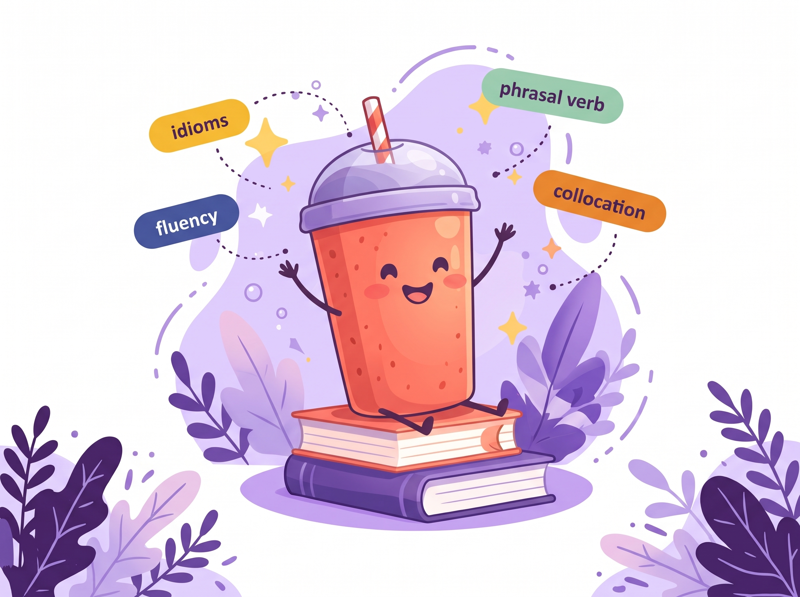

Part 1
Short answers about familiar topics: home, work, hobbies, food.
“Where is your hometown, and what is it like?”
Practise all three parts, paste in what you said, and get it back marked: every slip struck through, every fix beside it.
Bands are practice estimates from the text of your answer. Pronunciation isn't assessed yet.
Part 1 interview questions, Part 2 cue cards and Part 3 discussion questions, sorted by topic. Need something new? Ask for fresh questions on any topic you like.
Record yourself and listen back, then type or dictate what you said and send it in to be marked. Marking your voice directly is on the way.
I am agree agree that cities are very crowded, but I like living in a big city because there are many opportunity because there are many opportunities.
Every correction comes with a reason.
Each grammar slip is struck through with the fix beside it, and the reason is one hover away. You also get scores for fluency and coherence, vocabulary and grammar, plus a stronger version of your answer to compare with.
The band is a practice estimate from the text. Use it to see where you are heading, not as a result.
Collocations, idioms and phrasal verbs from your own answers drop into a notebook, along with suggested upgrades. Short on ideas for a topic? Blend a fresh word list on the spot.

Short answers about familiar topics: home, work, hobbies, food.
“Where is your hometown, and what is it like?”
A cue card, then one to two minutes of talking without stopping.
“Describe a place in your town or city where you like to spend time.”
Abstract questions that need an opinion, a reason and an example.
“How might artificial intelligence change everyday life in the next twenty years?”
Sixty cue cards are really ten themes. Practise by group, and see which topics connect.
Technology and digital life: a website, an app, a gadget, learning online…
Write one real experience once. Smoothies shows which cue cards it can answer and how to adapt it, without memorising a script.
“Learning graphic design online” can answer a skill, a website, a decision and saving money.
Short illustrated stories you can read and hear, with the expressions worth borrowing.
“A Trip That Changed My Plans”: break down, offer a lift, go to plan.
Your dashboard shows your band over time, the criterion costing you the most marks, and the mistakes that keep coming back. Then it builds a practice plan around them.
Make an account, answer one question, and see your first marked answer in a minute or two.